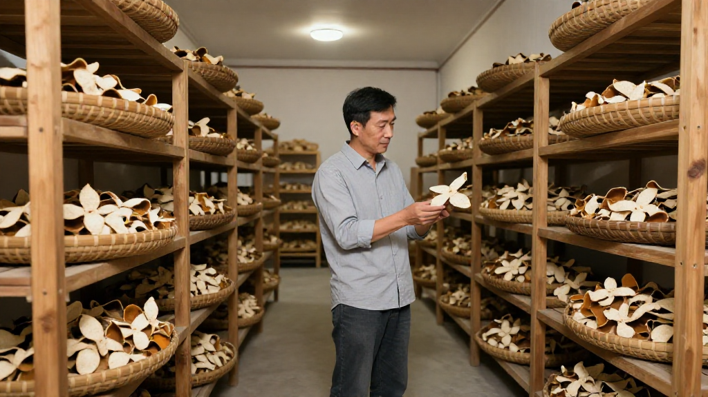
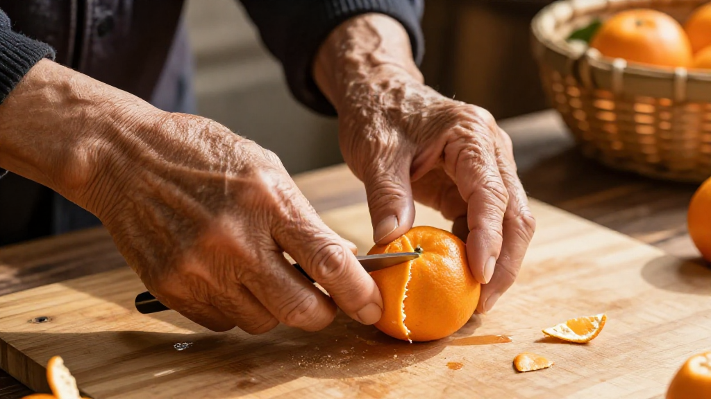
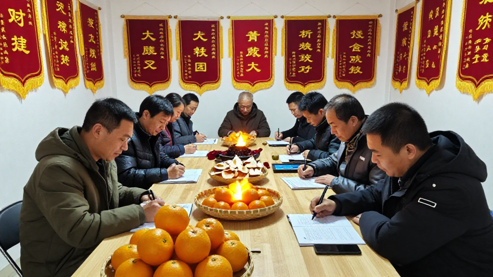

9月29日，第九屆新會陳皮村預售季正式啟動，主題是「產業聚勢 共享共贏」。今年採用合作社統購統銷的新模式：鎖量鎖價，柑農提前收定金，採購商提前鎖定貨源。與此同時，新會區農業農村局的新會柑鮮果產量申報核定工作也已進入尾聲——種植戶須在7、8、9月每月20日前完成線上申報，10月起區、鎮、村三級幹部會落田做現場核定。
一把鎖價的合同、一道落田的閘門，今年的預售季和往年不太一樣。滢滢姐從天馬村一直走到了茶坑村。
一、天馬村晨曦：陳伯的柑果
清晨六點半，天馬村的柑樹還裹在一層薄霧裡。滢滢姐推開陳伯家那扇斑駁的木門，屋裡已經亮起了燈。七十三歲的陳伯正蹲在地上，用那塊磨得發亮的竹篾篩子翻檢着昨夜收回來的柑果。
「陳伯，咁早？呢批果形唔錯，油室都飽滿。」
「滢滢你更早。今年雨水調得勻，你睇下呢隻果，皮身厚薄適中，揮發油含量肯定比舊年高。」
滢滢姐從包裡掏出一份資料：「陳皮村嘅預售季九月廿九就啟動喇，今年第九屆，主題係『產業聚勢 共享共贏』。今年村裡面搞咗新嘅合作社模式，統購統銷，價穩量足，你哋老人家唔使再驚被壓價。」
陳伯放下手裡的篾篩，神色認真起來：「我聽講喇。今次村裡面仲請咗梁師傅過嚟，佢嗰套二刀法開皮，成個天馬村搵第二個都做唔到咁靚。」
「梁師傅今日會到茶坑嗰邊。走，我哋先去睇下柑果嘅情況，等陣一齊過去。」
二、茶坑村陳皮合作社：產業聚勢新局

上午九點，茶坑村的陳皮合作社大門前已經停了三輛貨車。柑農老陳正在和廣州過來的茶莊老闆曾總對着一筐陳皮樣本交談。曾總戴着手套，拿起一片五年期陳皮對着光看，油室在光線下透出琥珀色的光澤。
「呢片皮唔錯，顏色轉化得幾均勻。我哋廣州茶莊而家對陳皮嘅需求量好大，尤其係中秋之後，好多客戶送禮首選新會陳皮。」
「今年合作社統一咗採摘標準，唔同區域分開存放，避免咗以前邊角料混在一起嘅問題。你想要邊個年份、邊個產區，我哋都可以幫你配。」
這時，梁師傅從裡屋走了出來。梁師傅今年六十八歲，是新會陳皮傳統曬製技藝的非遺傳承人，一雙老手因為常年與柑皮打交道，指紋都磨得比常人淺。
「曾總，你想要嘅老樹陳皮，茶坑呢邊有幾批。你睇下呢片——茶坑老樹出產，糖化程度高，入口綿滑，唔會苦澀。」
「真係一股自然嘅陳香，唔係嗰種濕倉催出嚟嘅味。」
「做陳皮最緊要係時間。急唔來，也呃唔來。今年陳皮村搞預售季，產業聚勢、共享共贏——我哋呢班老傢伙最想睇到嘅，就係有人願意花時間等一片好皮。」
曾總點點頭：「所以我哋每年都來茶坑收。疫情之後反而賣得更好，高端客戶對真貨的需求越來越強烈。」
三、梁師傅的二刀法：非遺技藝的傳承時刻

下午一點，茶坑合作社的院子裡擺開了幾張竹匾。梁師傅坐在矮凳上，面前是一筐新會柑。他拿起一隻柑果，先在果蒂處一切，穩穩地旋了一圈，然後從果底正中下刀，兩瓣柑皮對稱展開——正是新會陳皮最傳統的「二刀法」。旁邊圍了一圈柑農和年輕農戶，有人拿出手機錄影。
「睇清楚未？小敏，你爸爸陳伯都係用呢隻刀法。你哋年輕人學嘢要趁手快眼利，唔好等到我哋呢班老嘢做唔動了先嚟學。」
小敏是陳伯的女兒，今年三十五歲，在城裡做過電商運營，去年被陳伯叫回來幫忙打理合作社的線上銷售。她蹲下來，仔細看着梁師傅手上的動作。
「梁師傅，你呢套二刀法，開出嚟嘅皮點解特別靚？」
「因為每一刀都有講究。第一刀喺果蒂上邊，反手旋落去，劃開果肉同柑皮嘅連接；第二刀從果底正中落，唔偏唔倚，兩瓣皮大細先會一致。咁樣開出嚟嘅皮，曬乾之後形狀靚、陳化勻，存放唔會變形。」
「梁師傅，今年預售季，我哋合作社內定咗兩百盒茶坑五年嘅陳皮禮盒，線上線下同步開售。你覺得點樣定價合適？」
「五年皮，今年係最佳賞味期開始。價格方面，唔好同外省嗰啲九塊九包郵嘅相比——我哋嘅成本擺喺度。你同人哋拼價格，就係逼自己去學壞。所以我成日話，產業聚勢，首先要聚嘅係品質，唔係價格。」
四、簽約儀式：共享共贏的起點

下午三點，茶坑合作社的會議室裡坐滿了人。台上掛着紅底黃字的橫幅：「第九屆陳皮村新會陳皮預售季——產業聚勢 共享共贏」。台下坐着各村的柑農代表、合作社負責人，以及從廣州、深圳過來的採購商。
「今年預售季，我哋採用咗新嘅合作社模式：統購統銷，鎖量鎖價。柑農提前收定金，採購商提前鎖定貨源，杜絕咗以前『豐年爛市、減產炒價』嘅問題。」
簽約開始。梁師傅代表非遺傳承人，在承諾書上按下紅手印：「我哋老行尊保證，每一片陳皮都係正宗新會出品，絕不以次充好。」
陳伯坐在台下，看着這一幕，輕輕拍了拍旁邊滢滢姐的手背。
「我做咗幾十年柑農，第一次覺得賣陳皮賣得咁踏實。唔使再驚豐收年被人壓價，唔使再驚減產年被人抬價。產業聚勢，我哋呢班老農都係受益者。」
「滢滢姐，今年我哋茶莊嘅計劃係主推茶坑同天馬兩個產區嘅陳皮，主打五年同十年兩個年份。中秋之後銷量反而好過節前，你哋嘅合作社模式幫我哋慳咗好多中間環節。」
「產業聚勢，共享共贏。呢八個字唔係口號，係我哋今年真金白銀簽落去嘅合同。」
簽約儀式結束後，梁師傅在現場被幾個年輕人圍住請教二刀法。陳伯坐在門口抽着旱煙，看着合作社院子裡停着的貨車，臉上的皺紋舒展開來。滢滢姐站在走廊上，看着手機裡剛收到的預售訂單——首批兩百盒禮盒，上線兩小時已經訂出了七成。
常見問題
陳皮村的預售季是怎麼運作的？每年新會陳皮採摘季開始前，由陳皮村合作社統一組織預訂銷售：採購商提前下定金鎖定貨源，柑農提前收到預付款以規避市場波動。今年是第九屆，採用合作社統購統銷新模式。
天馬村和茶坑村的陳皮有什麼區別？兩者都是新會陳皮核心產區。天馬村位於銀洲湖畔，水土條件優越，所產陳皮以甜潤著稱；茶坑村靠近凌雲塔，土壤偏酸，所產陳皮香氣更濃郁、更耐存放。
什麼是二刀法開皮？新會陳皮的傳統開皮技藝：第一刀在果蒂上方反手旋切，劃開果肉與柑皮的連接；第二刀從果底正中下刀，使兩瓣柑皮對稱展開。二刀法開出的陳皮形狀端正、大小均勻，利於後續曬製與陳化。
如何分辨乾倉陳皮和濕倉陳皮？乾倉陳皮在自然條件下緩慢陳化，色澤轉化均勻、表面乾淨，聞起來是自然的陳香，無霉味或化學刺鼻味；濕倉陳皮經高溫高濕人工催熟，表皮顏色深但不自然，可能有霉點或酸味。手摸亦可辨：乾倉皮乾燥硬挺，濕倉皮偏軟有潮感。
今年的產量核定跟預售季有什麼關係？種植戶須在7、8、9月每月20日前完成線上產量申報（數據不可修改），10月起區、鎮、村三級幹部落田現場核定。產量數據固化後，正規渠道的貨源與年份信息更可核查。
想買預售季的禮盒，去哪裡？來新會陳皮村南門牌坊G04找滢滢姐，店裡常年備着熱茶，可當面看皮、免費試喝；廣州、港澳與海外的朋友都可以郵寄。
結語
從天馬村的一篩柑果，到茶坑村的一枚紅手印，今年預售季的關鍵詞其實只有兩個：一個是「鎖」——鎖量鎖價，讓柑農不必再賭行情；一個是「核」——十月落田核定產量，讓數字對得上果樹。
想親眼看一次二刀法開皮、摸一摸剛翻檢的柑果，國慶來新會陳皮村南門牌坊G04找滢滢姐坐坐。想看今年產區數字化的整體進展，看這篇《陳皮熱點日報：新會產區政策密集發布，產業數字化提速》；想學辨別真假的完整四招，翻翻這篇《四招教你辨別新會陳皮真假》。
下期預告：十月尾新會柑開摘，滢滢姐會跟着合作社下一次柑圍，把青皮、微紅皮、大紅皮三種採收時機擺在一起比——同一棵樹，早摘晚摘，香氣和價格差多少，鏡頭下說清楚。